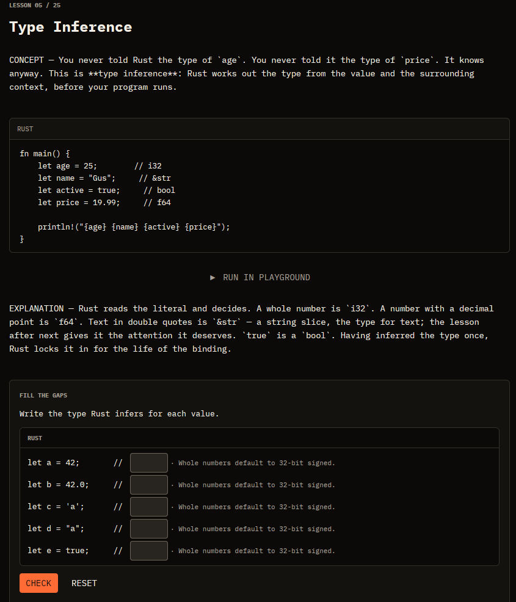
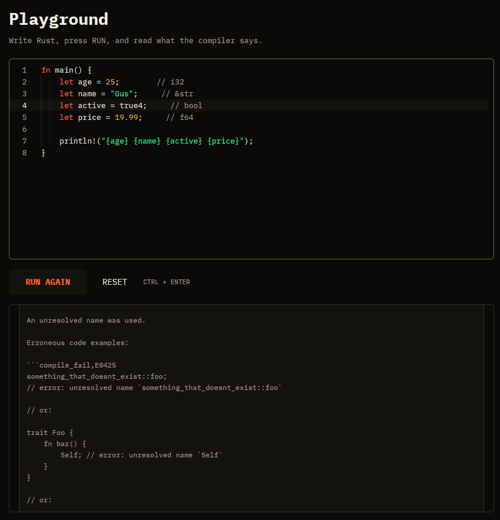
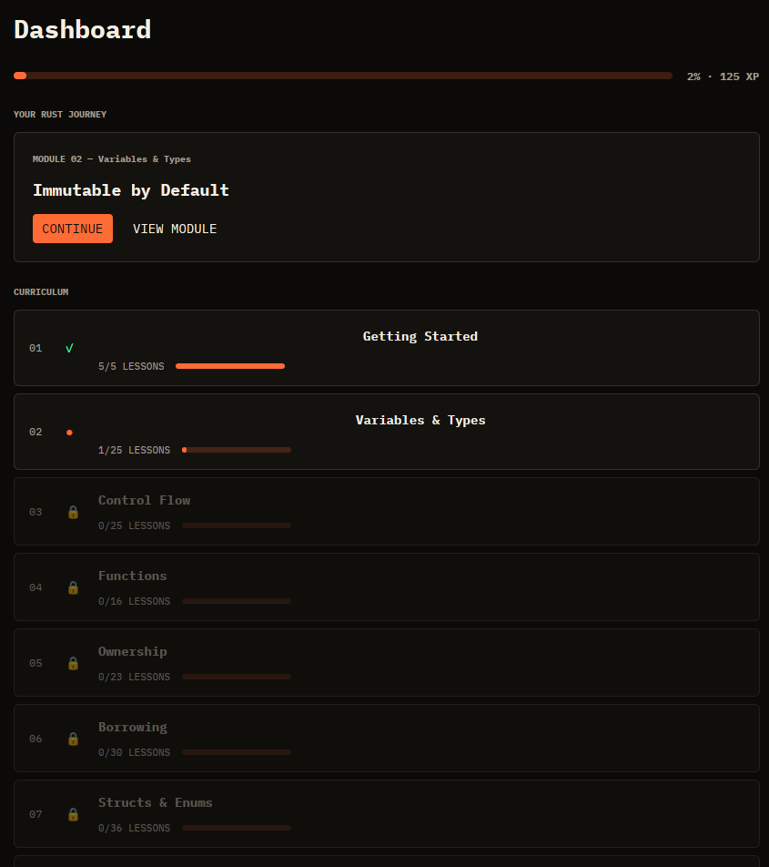

BORROW
ラストの遠回りを、やめよう。
LEARN RUST
WITHOUT THE
700-PAGE DETOUR.
A native desktop trainer for Rust fundamentals. Learn through short lessons, interactive exercises, and the real Rust compiler — not another wall of documentation.

SPECIMEN
The application, unretouched.
Real screens from the desktop app — a lesson, the playground mid-diagnosis, your training map. Nothing staged, nothing redrawn.

- i — FILL THE GAPS graded the moment you check
- ii — RUN IN PLAYGROUND from wherever you’re reading
- iii — EXPLANATION what happened, in plain language

rustc: the failing line is highlighted, and the compiler answers in its own words.
APPROACH
What makes it different.
-
LEARN BY DOING.
Short, structured lessons built from interactive blocks — fill the gap, step through, guess then run. The 528 exercises are checked the moment you press CHECK, with an explanation every time, not just a grade.
-
LEARN FROM THE REAL COMPILER.
Run Rust with
rustcitself and read structured diagnostics — error code, exact line, the compiler’s own explanation. Every code example in every lesson was compiled before it shipped. -
LEARN ON YOUR TERMS.
A native desktop app, not a tab. Lessons are bundled — they open on a plane. Progress lives on your machine first and syncs across your devices when you’re back online.
CURRICULUM
The path, in order.
Eleven modules, each unlocking the next. You finish one before the next opens — the same discipline the compiler enforces.
- 01Getting Started
- 02Variables & Types
- 03Control Flow
- 04Functions
- 05Ownership
- 06Borrowing
- 07Structs & Enums
- 08Collections
- 09Option & Result
- 10Generics & Traits
- 11Iterators
PRICING
Free to start. Five dollars to continue.
FREE
Modules 1–3 — forever.
Getting Started, Variables & Types, and Control Flow, with every lesson and exercise. No card, no trial clock.
$5/ month
BORROW Pro — Modules 4–11.
The rest of the curriculum, from Ownership to Iterators. Subscribe inside the app; cancel any time.
Checkout opens from the app in your browser — there is nothing to buy on this page.
Short lessons. The real compiler.
On your own desktop.
Three modules free in one download. Decide about the other eight later.
Download for macOS